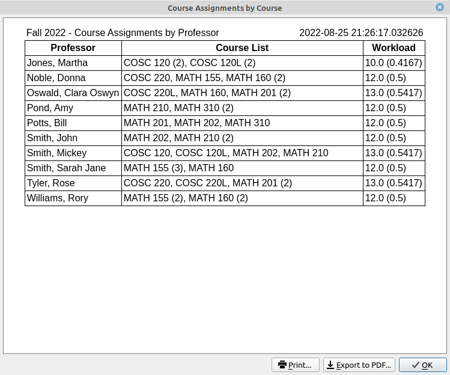

Reports
Most reports have two ways to view them, either as a document or as a table. The document format is really an HTML webpage. Document format allows the user to print the report to a printer or to export it to a PDF file. The table format allows the user to copy the report to the system clipboard as a tab delimited string that can be pasted into nearly any spreadsheet.
- Faculty List: Reports a table of faculty, their short designation, and an empty column (if you use the document format).
- Course Assignments by Course: Reports a list of all scheduled course assignments by course.
- Course Assignments by Professor: Reports a list of all scheduled course assignments by professor.
 - Schedule Sorted by Course: Reports the entire schedule sorted by the course name.

- Schedule Sorted by Professor: Reports the entire schedule sorted by the professor's name.
- Schedule Sorted by Room: Reports the entire schedule sorted by the room name.
- Print Room Schedule Images: This will send the room schedule images to the printer.
- Print Professor Schedule Images: This will send the professor schedule images to the printer.
- Schedule Changes: This allows the user to load in a previous draft of the schedule and reports the changes that were made between the two versions.
- Merge Report: The merge report displays additions and conflicts in the merging two schedules. This should be done before the user does a merge of schedules. Merging schedules would primarily be used if there were multiple people working on different portions of a single schedule or if there were multiple departments that share resources.